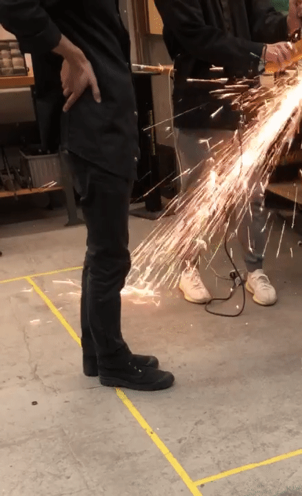
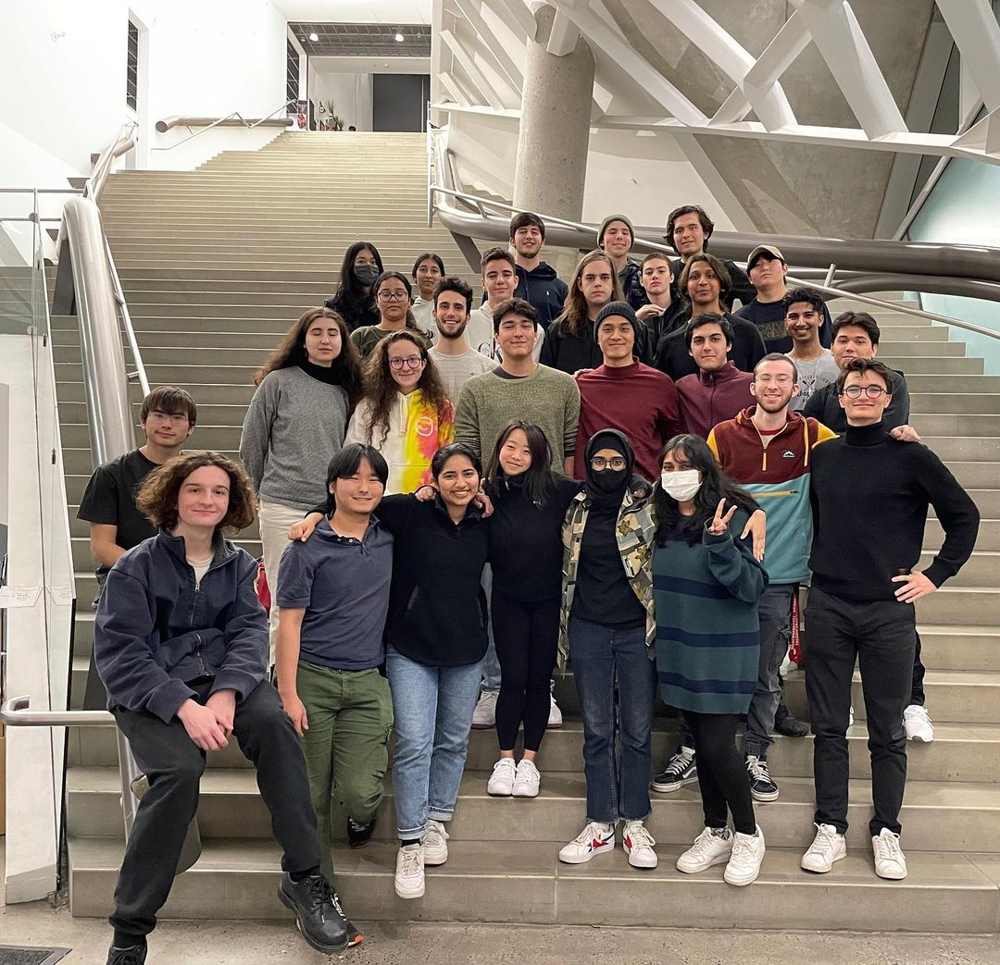

Background
From Greece to Dubai, and now studying Mechanical Engineering at Cooper Union in the United States, I’ve journeyed across continents and discovered my drive for understanding the intricate machinery and what goes on within it.
More Info